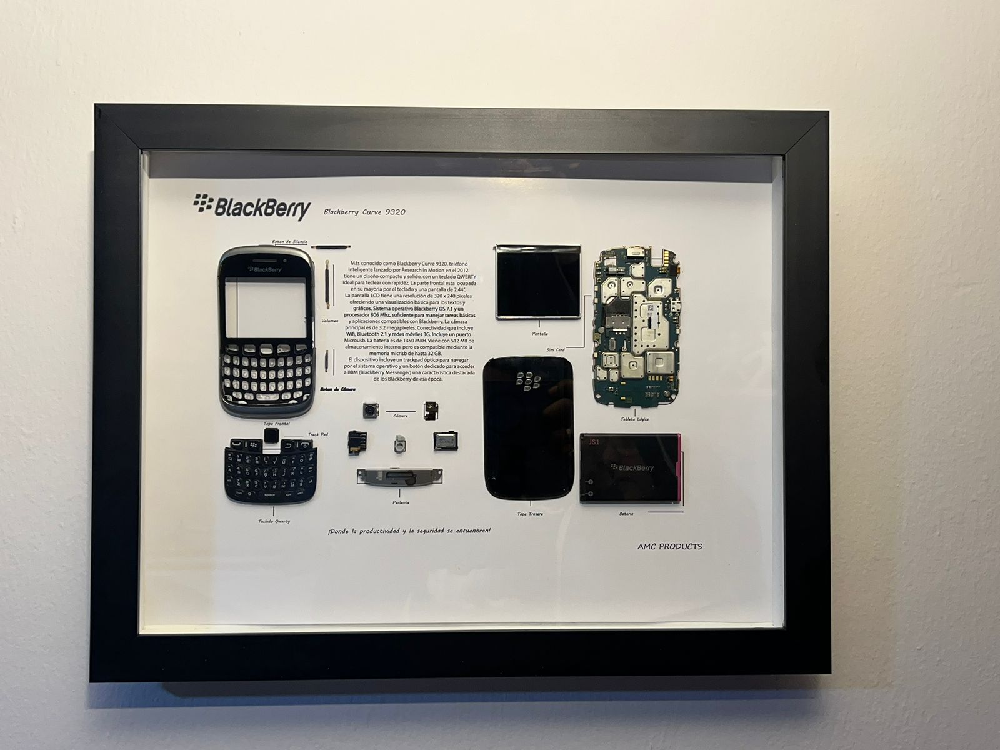

Blackberry 9320
El BlackBerry Curve 9320, lanzado en 2012, fue parte de la línea Curve, conocida por ofrecer teléfonos accesibles con las funciones clásicas de BlackBerry. Este dispositivo fue muy popular entre jóvenes y usuarios que buscaban un smartphone económico con capacidad de mensajería eficiente.
